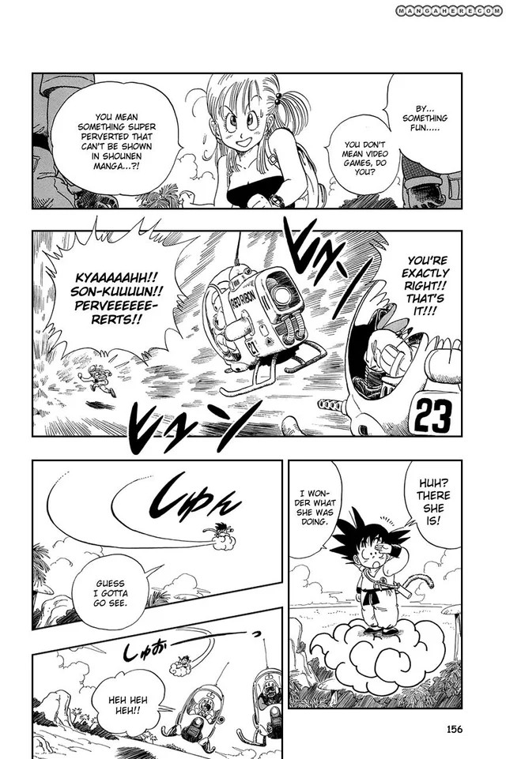
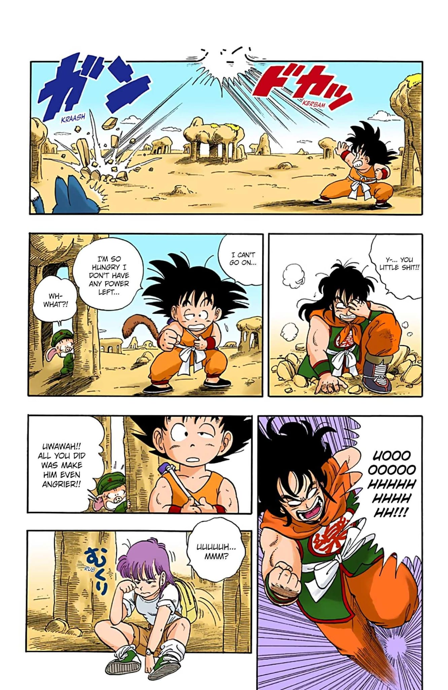
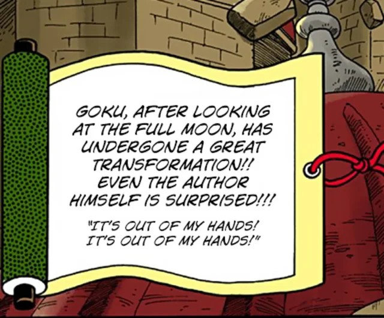
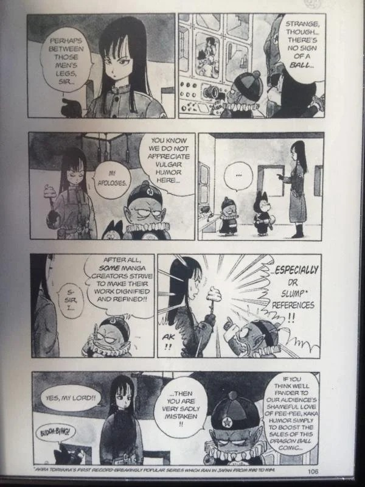

Born as a parody of the Chinese novel 'Journey to the West', Dragon Ball is a martial arts gag manga written by the now-deceased Akira Toriyama in 1984.
It tells the adventures of Son Goku, a mountain boy who knows no one and is unaware of the world, as he begins a journey in search of the seven Dragon Balls,
which are said to be able to grant any wish once gathered together.
It is a journey marked by many obstacles, breaking the fourth wall, and lots of humor, accompanied by a simple and lively artistic style that makes the
work both capable of being taken seriously and not.



